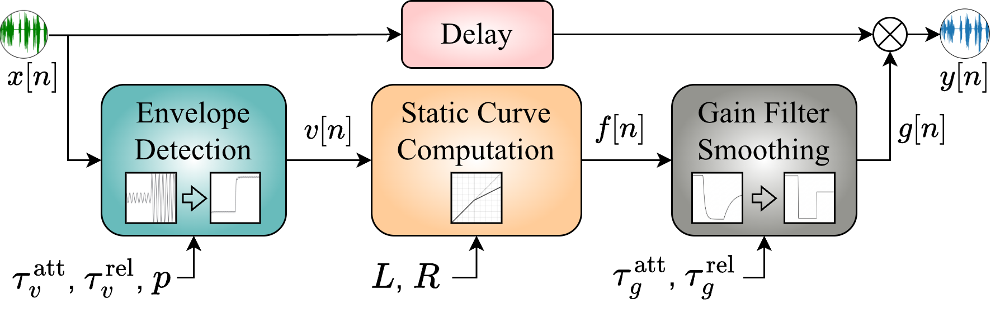

Black-Box Optimization for Identifying and Inverting Audio Dynamic Range Control Effects
CodeAbstract
Dynamic Range Control (DRC) is a widely used audio effect that adjusts signal dynamics for applications in music production, broadcasting, and speech processing. Inverting DRC is of broad importance in restoring the original dynamics, enabling remixing, and enhancing the overall audio quality. Existing DRC inversion methods either overlook key parameters or rely on precise parameter values, which can be challenging to estimate accurately. To address this limitation, we make two main contributions. First, building on a widely used model-based compression inversion framework, we derive and validate an analytical inversion method for dynamic range expansion, enabling a unified treatment of both compression and expansion effects. Second, we propose a hybrid parameter estimation framework that combines classification and regression strategies: classification is used to identify DRC profiles when strong priors are available, while regression enables parameter estimation for unconstrained DRC configurations. The estimated parameters are used for model-based signal recovery from its compressed or expanded version. Experimental evaluations across various music and speech datasets confirm the effectiveness and robustness of our approach, outperforming several state-of-the-art end-to-end deep learning techniques.
Proposed Method

Figure 1. Proposed hybrid end-to-end DRC inversion framework combining classification and regression pathways.

Figure 2. DRC task chain.
DRC Profiles
Dataset Parameter Settings
| Parameter | Description | Small dataset (6 classes) | Large dataset (31 classes) | ||||
|---|---|---|---|---|---|---|---|
| A | B | C | D | E | |||
| Lc (dBFS) | Threshold (compressor) | -32 | -19.9 | -24.4 | -26.3 | -38.0 | [-60, -20] |
| Le (dBFS) | Threshold (expander) | -12 | -19.9 | -24.4 | -26.3 | -18.0 | [-40, -10] |
| R (dBin:dBout) | Ratio | 3.0 | 1.8 | 3.2 | 7.3 | 4.9 | [2, 15] |
| τvatt (ms) | Envelope attack | 5 | [5, 130] | ||||
| τvrel (ms) | Envelope release | 5 | [5, 130] | ||||
| τgatt (ms) | Gain attack | 13.0 | 11.0 | 5.8 | 9.0 | 13.1 | [10, 500] |
| τgrel (ms) | Gain release | 435 | 49 | 112 | 705 | 257 | [25, 2000] |
| p (1 or 2) | Detector type | 2 | 2 | ||||
Detailed Parameters of 30 DRC Profiles
| Profile | L(dB) | R | τvatt(ms) | τvrel(ms) | τgatt(ms) | τgrel(ms) |
|---|---|---|---|---|---|---|
| 1 | -30.6 | 2.3 | 73.9 | 20.3 | 451.5 | 1153.6 |
| 2 | -55.9 | 12.1 | 25.4 | 50.9 | 54.1 | 1274.5 |
| 3 | -55.1 | 13.4 | 43.3 | 76.4 | 354.6 | 468.4 |
| 4 | -39.6 | 13.1 | 66.2 | 10.1 | 325.5 | 1435.7 |
| 5 | -31.4 | 12.3 | 99.4 | 91.7 | 160.7 | 790.8 |
| 6 | -60.0 | 15.0 | 130.0 | 89.2 | 393.4 | 1758.2 |
| 7 | -47.8 | 5.4 | 50.9 | 84.1 | 403.1 | 1677.6 |
| 8 | -46.9 | 4.9 | 48.4 | 66.2 | 257.7 | 1516.3 |
| 9 | -45.3 | 2.5 | 89.2 | 114.7 | 344.9 | 1234.2 |
| 10 | -26.5 | 10.8 | 114.7 | 68.8 | 209.2 | 145.9 |
| 11 | -43.7 | 8.4 | 35.6 | 107.0 | 432.1 | 750.5 |
| 12 | -20.8 | 6.5 | 84.1 | 101.9 | 500.0 | 347.4 |
| 13 | -22.4 | 11.3 | 124.9 | 63.7 | 364.3 | 831.1 |
| 14 | -40.4 | 10.0 | 112.1 | 99.4 | 374.0 | 1355.1 |
| 15 | -52.7 | 4.4 | 104.5 | 35.6 | 199.5 | 1919.4 |
| 16 | -51.8 | 2.0 | 117.2 | 117.2 | 277.0 | 549.0 |
| 17 | -38.0 | 5.2 | 5.0 | 40.7 | 296.4 | 1717.9 |
| 18 | -51.0 | 3.3 | 28.0 | 127.4 | 170.4 | 669.9 |
| 19 | -29.8 | 9.2 | 33.1 | 56.0 | 131.6 | 1959.7 |
| 20 | -29.0 | 11.8 | 45.8 | 81.5 | 412.8 | 992.3 |
| 21 | -28.2 | 5.7 | 10.1 | 17.8 | 34.7 | 428.1 |
| 22 | -50.2 | 12.6 | 22.9 | 122.3 | 83.2 | 1395.4 |
| 23 | -23.3 | 12.9 | 12.7 | 7.6 | 112.2 | 25.0 |
| 24 | -44.5 | 7.8 | 15.2 | 86.6 | 306.1 | 1838.8 |
| 25 | -46.1 | 11.0 | 122.3 | 12.7 | 189.8 | 1113.3 |
| 26 | -56.7 | 2.8 | 94.3 | 28.0 | 102.6 | 186.2 |
| 27 | -24.9 | 10.5 | 38.2 | 43.3 | 335.2 | 226.5 |
| 28 | -48.6 | 8.9 | 107.0 | 104.5 | 25.0 | 1798.5 |
| 29 | -49.4 | 10.2 | 127.4 | 71.3 | 92.9 | 508.7 |
| 30 | -24.1 | 14.2 | 81.5 | 58.6 | 180.1 | 871.4 |
DRC Inversion Results

Figure 1. Compression inversion results on the large datasets.

Figure 2. Expansion inversion results on the large datasets.
Audio Hearing Examples
We provide several audio examples to compare different inversion methods. The original audio is a 5-second chunk extracted from the MedleyDB dataset.
| Model | Audio | \( \mathcal{L}^{\text{MSE}}_{\hat{x},x} \downarrow \) | \( \mathcal{L}^{\text{Mel}}_{\hat{x},x} \downarrow \) | SISDR \( \uparrow \) | 2f-score \( \uparrow \) |
|---|---|---|---|---|---|
| Original | \ | \ | \ | \ | |
| Compression, with the compressor: [-32, 3, 5, 5, 13, 435, 2] | |||||
| Compressed | 0.0046 | 1.18 | 9.83 | 28.38 | |
| Ref | \(7.34 \times 10^{-7} \) | 0.0097 | 71.21 | 97.00 | |
| Anchor | 0.64 | 3.07 | 0.44 | 8.06 | |
| AST | \( 3.27 \times 10^{-6} \) | 0.019 | 41.19 | 89.20 | |
| MEE | 0.027 | 0.57 | 14.29 | 39.96 | |
| Demucs | 0.18 | 0.73 | 10.18 | 22.50 | |
| HDemucs | 0.026 | 0.49 | 18.72 | 45.78 | |
| De-Limiter | 0.0035 | 0.077 | 29.76 | 53.35 | |
| CleanUMamba | 0.0011 | 0.036 | 34.29 | 57.10 | |
| Expansion, with the expander: [-26.3, 7.3, 5, 5, 13, 435, 2] | |||||
| Expanded | 0.0051 | 1.08 | 9.30 | 23.76 | |
| Ref | \(6.41 \times 10^{-7} \) | 0.0027 | 71.68 | 95.80 | |
| Anchor | 0.011 | 0.52 | 8.74 | 21.11 | |
| AST | 0.00012 | 0.0081 | 35.96 | 62.06 | |
| MEE | 0.015 | 0.035 | 23.78 | 50.09 | |
| Demucs | 0.56 | 0.70 | 6.56 | 20.13 | |
| HDemucs | 0.24 | 0.33 | 13.95 | 43.62 | |
| De-Limiter | 0.0024 | 0.69 | 68.62 | 39.56 | |
| CleanUMamba | 0.00035 | 0.77 | 16.38 | 32.38 | |